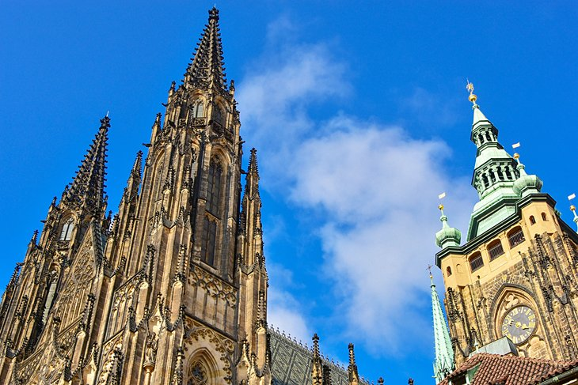

Part of the Prague Castle complex, St. Vitus Cathedral is best known as the home of the Bohemian Coronation Jewels, as well as the tomb of the Czech people's most revered saint, St. Wenceslas.
The cathedral has a long history. Dating back to the year 925, when Prince Wenceslas built a chapel on the site, the building grew along with Prague's importance, and it soon became a basilica after the Prague bishopric was established. There was another period of expansion between 1344 and 1419 when it began its transformation into a Gothic cathedral, and the St. Wenceslas Chapel was built. Construction and repairs resumed in the late 18th century, adding neo-Gothic elements.
Highlights of a visit include seeing the bronze doors adorned with reliefs of the cathedral's history, ornate stained glass windows in the chapels, and the Royal Mausoleum. Tourists should be sure to visit St. Wenceslas Chapel to admire the murals, which are original 14th-century depictions of the stations of the cross, as well as scenes depicting the life of St. Wenceslas.
Address: III. nádvoří 48/2, 119 01 Praha 1-Hradčany